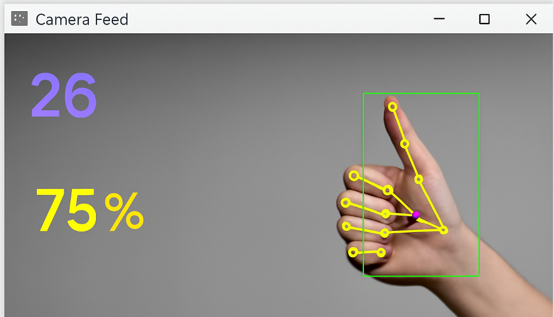

Gesture Based Volume Control
Control system volume using hand gestures detected via a webcam using OpenCV and MediaPipe. Real-time finger distance adjusts the volume dynamically.
View Code
Gesture Based Brightness Control
Adjust screen brightness using hand gestures with real-time webcam input. Utilizes OpenCV and MediaPipe to measure finger spacing for brightness mapping.
View Code
YOLOv5 Live Webcam Detection
This project demonstrates real-time object detection using YOLOv5 with a live webcam feed. It utilizes OpenCV for video capture and PyTorch for running the YOLOv5 model, allowing users to detect and track objects directly from their webcam in real time.
View Code